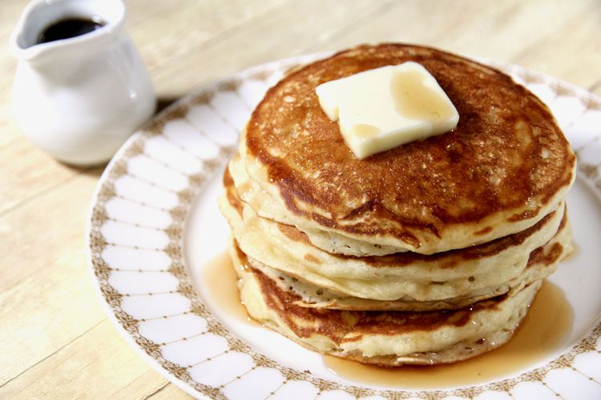

Fluffy maple buttermilk pancakes

Description
These are the best buttermilk pancakes. They are light and fluffy with a touch of maple flavor.
Ingredients
- 2 cups all-purpose flour.
- ¼ cup white sugar.
- 2 teaspoons baking powder.
- 1 teaspoon baking soda.
- 1 teaspoon salt.
- 2 cups buttermilk.
- 2 large eggs.
- ¼ cup maple syrup.
- ¼ cup unsalted butter, melted.
- Cooking spray.
Steps
- Whisk flour, sugar, baking powder, baking soda, and salt together in a large mixing bowl; set aside.
- Whisk buttermilk, eggs, maple syrup, and butter together in another bowl; whisk in flour mixture until lumps are gone.
- Heat a large skillet over medium heat; coat with cooking spray. Drop batter by 1/4 cupfuls onto skillet; cook until bubbles appear on the surface, 3 to 4 minutes. Flip; cook until browned on the other side, 2 to 3 minutes. Repeat with remaining batter.